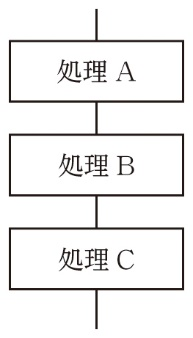
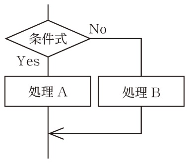
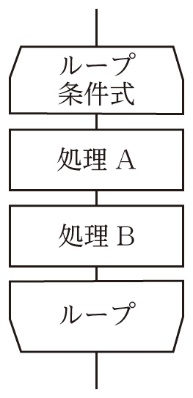
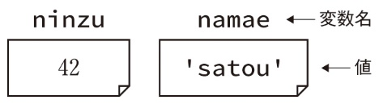
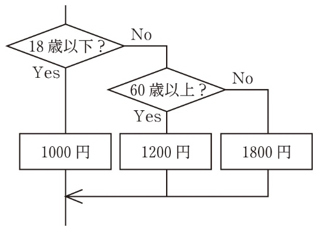

Section 1 — Review
基本知識のおさらい
順次・分岐・反復の三つの基本構造から始めます。割り算の余りで分岐を決める書き方、繰り返しの対象範囲をインデントで読み取る力、配列の添字の始まり、そして処理のまとまりを関数として独立させる考え方まで、一続きで確かめます。
はじめに条件で処理を分ける選択構造、次に同じ処理を繰り返す反復構造を確かめます。続いて複数の値を一つの名前で扱う配列、最後に処理のまとまりを独立させる関数へ進みます。
中学までの復習にあたる部分です。書かれた順に処理を行う順次構造、条件を満たすかどうかで処理を分ける分岐構造、同じ処理を繰り返す反復構造。この三つの組み合わせでプログラムは記述できます。




確認事項の表のとおりです。条件式 X が真なら処理 A、そうでなくもし条件式 Y が真なら処理 B、そうでなければ処理 C。elif と else で始まるブロックは、分岐がなければ省略できます。
| 記述方法 | 内容 |
|---|---|
| if 条件式X： 処理A elif 条件式Y： 処理B else： 処理C | ・もし条件式Xが真の場合、処理Aを実行する。 ・そうでなくもし条件式Yが真ならば、処理Bを実行する。 ・そうでなければ、処理Cを実行する。 ※elifとelseで始まるブロックは分岐がなければ省略可。 |
確認事項の表では、for は指定された回数（範囲）分だけ処理 A を実行し、while は条件式が真の間だけ処理 A を実行します。どこまでが繰り返しの対象かは、インデントから読み取ります。
| 記述方法 | 内容 |
|---|---|
| for 繰り返し回数（範囲）の指定： 処理A | 指定された回数（範囲）分、処理Aを実行する。 指定文には、変数の変化も指定する。 |
| while 条件式： 処理A | 条件式が真の間、処理Aを実行する。 while True:とすると、無限に繰り返す。 |
確認事項では、配列は複数の変数を一列にまとめたもので、一つの名前で扱えるものとされています。配列全体を指す配列名と、格納された一つひとつの値を指し示す番号の添字があり、角括弧で各要素を表します。
関数はある機能をひとまとめにしたもので、プログラムのほかの部分から呼び出して使えます。あらかじめ用意されているものを組み込み関数、作成者が定義するものをユーザ定義関数といいます。
| 1 | def sankaku(teihen, takasa): |
| 2 | menseki = teihen * takasa / 2 |
| 3 | return menseki |
| 4 | |
| 5 | kekka1 = sankaku(8, 4) |
| 6 | kekka2 = sankaku(6, 3) |
| 7 | print('1つ目', kekka1) |
| 8 | print('2つ目', kekka2) |
次の⑴、⑵のプログラムを実行した結果、画面に表示されるものを答えよ。なお、「a % b」は、割り算の余りを得るもので、算術演算子と呼ばれる演算子の一つである。
| 1 | x = 10 |
| 2 | if x % 3 == 0: |
| 3 | print('FIZZ') |
| 4 | else: |
| 5 | print(x) |
10
x が 3 で割り切れれば FIZZ、そうでなければ x の値を表示するプログラムである。10 を 3 で割った余りは 1 なので、else の側が実行される。
| 1 | x = 30 |
| 2 | if x % 3 == 0: |
| 3 | print('FIZZ') |
| 4 | if x % 5 == 0: |
| 5 | print('BUZZ') |
FIZZ, BUZZ（縦に表示）
3〜5行目が2行目の分岐処理の対象、5行目が4行目の分岐処理の対象であることがインデントから読み取れる。2行目の分岐処理が4行目の分岐処理を内包する「入れ子構造」である。
⑴ xが3で割り切れればFIZZ、そうでなければxの値を表示するプログラムである。
⑵ 3〜5行目が2行目の分岐処理の対象、5行目が4行目の分岐処理の対象であることがインデントから読み取れる。2行目の分岐処理が4行目の分岐処理を内包する「入れ子構造」である。xが3で割り切れればFIZZ、3で割り切れてかつ5でも割り切れる、つまり15で割り切れればFIZZ BUZZと表示し、それ以外は何も表示しないプログラムである。
インデントの深さが、その行がどの if の中にいるかを示します。⑵ では 5 行目だけが 4 行目より深いので、5 行目は「3 で割り切れ、かつ 5 でも割り切れる」ときにしか実行されません。x を変えて、どの行まで進むかを追うと確かめられます。
| x | 3 で割り切れる | 5 で割り切れる | 表示 |
|---|---|---|---|
| 30 | ○ | ○ | FIZZ, BUZZ |
| 9 | ○ | × | FIZZ |
| 10 | × | ○ | （何も表示されない） |
| 7 | × | × | （何も表示されない） |
次の⑴、⑵のプログラムを実行した結果、画面に表示されるものを答えよ。なお、「range(5)」は、0から5未満の整数を返す組み込み関数である。
| 1 | x = 0 |
| 2 | for i in range(5): |
| 3 | x = x + 1 |
| 4 | print(x) |
5
print(x) は 3 行目と同じ深さではないので繰り返しの対象ではない。1 を 5 回加算し終えたあと、1 回だけ表示される。
| 1 | x = 0 |
| 2 | for i in range(5): |
| 3 | x = x + i |
| 4 | print(x) |
0, 1, 3, 6, 10（縦に表示）
print(x) が繰り返しの対象なので 5 回実行される。i は 0 から 1 ずつ増えるので、加えられる値も 0、1、2、3、4 と変わっていく。
⑴⑵の2行目は、5回繰り返しを行うfor文で、共通テスト用プログラム表記で表した場合の「iを0から4まで1ずつ増やしながら繰り返す」に相当する。繰り返しの対象行は、⑴は3行目のみ、⑵は3・4行目であることがインデントからわかる。よって、print(x)は、⑴は繰り返しの対象ではないため1回、⑵は繰り返しの対象となるため5回実行される。
⑴⑵の3行目の「x = x + ○」は、「xに○を加えた結果をxに代入する」処理である。⑴では1を5回加算する。⑵では「i（0から1ずつ増えていく変数）」を繰り返し加算する処理である。
⑵ は x に i を足すので、足す値そのものが毎回変わります。表示されるのは足したあとの x です。
| 回 | i | 加える値 | 加えたあとの x | 表示 |
|---|---|---|---|---|
| 1回目 | 0 | 0 | 0 | 0 |
| 2回目 | 1 | 1 | 1 | 1 |
| 3回目 | 2 | 2 | 3 | 3 |
| 4回目 | 3 | 3 | 6 | 6 |
| 5回目 | 4 | 4 | 10 | 10 |
ある商品について、五つの店舗の小売価格の最安値を求める次のプログラムの空欄を埋めよ。なお、「for x in kakaku:」は、変数xにリストkakakuの要素を一つずつ代入しながら要素数分の繰り返しを行う制御文である。
| 1 | kakaku = [580, 970, 430, 820, 760] |
| 2 | saisyo = kakaku[0] |
| 3 | for x in kakaku: |
| 4 | if x ① saisyo: |
| 5 | saisyo = ② |
| 6 | print('最安値:', ③ ) |
① < ② x ③ saisyo
その時点での最小値と各要素を順に比較し、より小さな値が見つかるたびに最小値を置き換えていく。2 行目でリストの第一要素を最小値の初期値にしているので、③ では saisyo をそのまま表示すればよい。
3行目のような、リストの要素を一つずつ代入しながら繰り返しを行う指定は直観的でわかりやすい記述方法である。このような記述ができないプログラミング言語では、要素数分の繰り返し処理を記述し、繰り返し処理内で、要素を取り出して変数xに代入する処理を記述する。
最小値を求めるには、まず、このプログラムの2行目のようにリストの第一要素の値、もしくは最小値になり得ない大きい値を一時的に最小値（ここではsaisyo）に代入しておき、繰り返し処理の中で、より小さな値へと最小値を更新していく。
空欄①を「<」でなく「<=」としても結果は同じだが、効率の悪いプログラムとなる。「<=」とした場合、xとsaisyoが等しいときにもsaisyo値の書き換えを行うが、最小値を求めるという目的に対してこの処理の必要性はなく、効率がよくない。
更新が起きるのは、それまでの最小値より小さい値が出てきたときだけです。
| x | そのときの saisyo | 更新するか | 更新後 |
|---|---|---|---|
| 580 | 580 | しない | 580 |
| 970 | 580 | しない | 580 |
| 430 | 580 | する | 430 |
| 820 | 430 | しない | 430 |
| 760 | 430 | しない | 430 |
1日の降水量のデータが1年間分、二次元配列kousuiに入っている。最初の添字は月を、2番目の添字は日付を昇順で表し、kousui[0][0]は1月1日の降水量を表すとき、kousui[2][8]は何月何日の降水量を指しているか答えよ。
3月9日
kousui[0][0] が 1 月 1 日なので、添字は 0 から始まる。最初の添字 2 は 3 番目の月、2 番目の添字 8 は 9 番目の日を指す。
kousui[i][j]は、二次元配列で、内包されているi番目の配列内j番目の要素を指す。この例題では、添字が0から始まるか1から始まるかの記載はないが、kousui[0][0]が登場することから、0で始まることがわかる。
上の「ベストフィット」「解説」にある a 番目の配列・i 番目の要素は、添字の番号を指す言い方です。日常語の「何番目」とは 1 つずれるので、読み分けてください。
添字が 0 から始まるとき、添字 + 1 が「何番目か」になります。問題文に添字の始まりが書かれていなくても、kousui[0][0] のように 0 が使われている例が出ていれば、そこから 0 始まりだと読み取れます。
| 添字 | 0 | 1 | 2 | … | 8 |
|---|---|---|---|---|---|
| 月（最初の添字） | 1月 | 2月 | 3月 | … | 9月 |
| 日（2番目の添字） | 1日 | 2日 | 3日 | … | 9日 |
入力された商品価格と消費税率から税込金額を求めて表示する、次のプログラムの空欄に入る変数名を答えよ。ただし、1円未満は切り捨てとする（「//」は割り算の商の整数部分を得る演算子である）。
| 1 | def zeikomi(kingaku, tax): |
| 2 | return kingaku + kingaku * tax // 100 |
| 3 | kakaku = 1980 |
| 4 | kekka10 = zeikomi( ① , 10) |
| 5 | kekka8 = zeikomi( ① , 8) |
| 6 | print(kakaku, '円は税率10％で', ②, '円・税率8％で', ③ , '円') |
① kakaku ② kekka10 ③ kekka8
① は関数に渡す引数なので、価格を入れておいた変数 kakaku。②③ は関数の戻り値を受け取った変数で、税率 10％ の結果が kekka10、8％ の結果が kekka8 である。
1・2行目で関数zeikomi()を定義している。呼び出し元から渡される引数はkingakuとtax、戻り値は、計算式を直接returnの後に記述することで、その計算結果を呼び出し元に返すよう記述されている。計算の結果を一度変数に代入しておき、その変数を戻り値として返してもよい。4・5行目で2回関数を呼び出している。
このように、何度でも呼び出す可能性のある処理のまとまりや、ある特定の用途を記述した部分を関数として独立させておくことで、プログラム全体が理解しやすく、また修正もしやすくなる。
原本は変数名だけを問うていますが、値を入れて確かめると関数の働きがはっきりします。「//」は商の整数部分を得るので、1 円未満は切り捨てられます。
| 呼び出し | kingaku | tax | kingaku * tax // 100 | 戻り値 |
|---|---|---|---|---|
| zeikomi(kakaku, 10) | 1980 | 10 | 198 | 2178 |
| zeikomi(kakaku, 8) | 1980 | 8 | 158 | 2138 |
右のフローチャートは、ある映画館のチケット代金を年齢に応じて決定する処理の一部を表したものである。25歳の場合の代金はいくらか。

1800円
25歳を指定した場合の流れを追ってみると、最初の分岐の条件式「18歳以下？」でNoとなって右下の次の分岐へ進む。次の分岐の条件式は「60歳以上？」のため、再びNoとなって右下の「1800円」に到達する。
25歳を指定した場合の流れを追ってみると、最初の分岐の条件式「18歳以下？」でNoとなって右下の次の分岐へ進む。次の分岐の条件式は「60歳以上？」のため、再びNoとなって右下の「1800円」に到達する。
Pythonでのプログラム例を以下に示す。if-elseの入れ子構造となっている。Pythonでは、「そうでなくもし・・・ならば」の条件分岐にelifという記述を使うことで三つ以上の分岐を並列して表現できるので、二つ目のプログラム例のように簡潔に記述できる。
| 1 | if x <= 18: # もしx<=18ならば |
| 2 | print('1000円') |
| 3 | else: |
| 4 | if x >= 60: |
| 5 | print('1200円') |
| 6 | else: |
| 7 | print('1800円') |
| 1 | if x <= 18: |
| 2 | print('1000円') |
| 3 | elif x >= 60: |
| 4 | print('1200円') |
| 5 | else: |
| 6 | print('1800円') |
「18歳以下」は 18 を含み、「60歳以上」は 60 を含みます。境目の年齢を入れて、どこへ流れるかを確かめておくと取り違えません。
| 年齢 | 18歳以下？ | 60歳以上？ | 代金 |
|---|---|---|---|
| 18 | Yes | — | 1000円 |
| 19 | No | No | 1800円 |
| 25 | No | No | 1800円 |
| 59 | No | No | 1800円 |
| 60 | No | Yes | 1200円 |
入力された整数が変数xに入っているとき、xの絶対値を表示する次のプログラムの空欄に適当なものを入れよ。
| (01) | もし ① ならば: |
| (02) | x = ② |
| (03) | 表示する("絶対値:", x) |
x < 0
「xの絶対値はx＞＝0の場合はx、x＜0の場合は－x」という数学の知識を基に考える。
-x
2行目の＝（イコール）は代入を意味する演算子で、等しいことを意味する等号とは異なる。例えば、xの値が－5の場合、右辺の－xは－（－5）、すなわち5となり、左辺のxに5が代入される。
「xの絶対値はx＞＝0の場合はx、x＜0の場合は－x」という数学の知識を基に考える。2行目の＝（イコール）は代入を意味する演算子で、等しいことを意味する等号とは異なる。例えば、xの値が－5の場合、右辺の－xは－（－5）、すなわち5となり、左辺のxに5が代入される。Pythonでのプログラム例を以下に示す。値を入力して動作確認できるよう、入力処理を最初に行っている。①はx＜＝0でも動作するが、x＝0のときは無駄な処理となるため効率が悪い。
| 0 | x = int(input('整数を入力')) |
| 1 | if x < 0: |
| 2 | x = -x |
| 3 | print(x) |
x = -x は「等しい」という意味ではありません。右辺を計算して、その結果を左辺に代入するという指示です。数式として読むと x = -x は x = 0 のときしか成り立ちませんが、代入文としては「符号を反転した値を入れ直す」処理になります。
| 入力した x | x < 0 は真か | 実行後の x | 表示 |
|---|---|---|---|
| -5 | 真 | 5 | 絶対値: 5 |
| 0 | 偽 | 0 | 絶対値: 0 |
| 7 | 偽 | 7 | 絶対値: 7 |
年1回1％の複利がつく預金に預けたyokin円の、10年間の預金額の推移を表示する次のプログラムについて最も適当な記述を、次の(ア)〜(エ)から一つ選べ。
| 1 | risoku = 1.0 |
| 2 | for i in range(10): |
| 3 | yokin = yokin * (1 + risoku / 100) |
| 4 | print(int(yokin)) |
(ア) 適当でない。利息が%表記のため、risoku / 100として計算しているが、100分の1ずつ増加するのはyokinであり、risokuではない。
(イ) 適当でない。10年分、10回繰り返し利息分を加算しているので、預金額と年数は関係がある。
(ウ)(エ) 4行目のprint()は3行目と同じインデントなので、3行目と同様に10回繰り返し実行される。もし、4行目が2行目と同じインデントであれば、繰り返しの対象とはならず、最後に1度だけ表示される。なお、int(yokin)は引数yokinを整数型に変換して返す処理である。小数点以下は切り捨てられる。
(ア) は変数名の取り違え、(イ) は繰り返し回数の見落とし、(ウ) は 4 行目のインデントの読み違えです。どれも「繰り返しの対象がどこまでか」を読めば決まります。4 行目が 3 行目と同じ深さにあるので、表示も 10 回行われます。
| 4行目のインデント | 繰り返しの対象か | 表示回数 |
|---|---|---|
| 3行目と同じ深さ（本問） | 対象 | 10 回 |
| 2行目と同じ深さ | 対象でない | 最後に 1 回 |
出席番号1番から40番までの得点が配列Tokutenに入っている。最高得点を表示する次のプログラムの空欄に入る最も適当なものを、下の(ア)〜(ケ)から一つずつ選べ。ただし、「要素数(配列)」は配列の要素数を返す関数である。なお、配列の添字は1から始まるものとする。
| (01) | Tokuten = [50, 40, ・・(略)・・, 30, 70] |
| (02) | saidai = 0 |
| (03) | bango = 0 |
| (04) | iを1から ① まで1ずつ増やしながら繰り返す: |
| (05) | もしTokuten[i] ② saidaiならば: |
| (06) | saidai = Tokuten[i] |
| (07) | bango = i |
| (08) | 表示する("最高点：", saidai, "出席番号：", ③ ) |
最大値（や最小値）を求める場合によく使う方法である。最大値よりも大きい数が見つかるたびに最大値を（最小値よりも小さな数が見つかるたびに最小値を）更新する。本問では、出席番号も表示するため、bangoも更新している。
プログラミング言語の多くは、添字は基本的に0から始まる。大学入試センターの共通テスト用プログラム表記の例示でも、「特に説明がない場合、配列の要素を指定する添字は0から始まる」と明記されている。しかし、本問のように、問題文中に「添字は1から始まる」と明記されている場合もあるので、問題文をよく読み、下線を引いておくなどするとよい。
本問は添字が 1 から始まるので、添字 i がそのまま出席番号になります。だから ③ は bango です。もし添字が 0 から始まる書き方なら、出席番号は bango + 1 になります。原本が示す Python のプログラムでは添字が 0 から始まるため、末尾が bango + 1 に変わっています。同じ処理でも、添字の始まりで表示の式が変わります。
| 添字の始まり | 繰り返しの範囲 | 表示する出席番号 |
|---|---|---|
| 1 から（本問） | 1 〜 要素数（Tokuten） | bango |
| 0 から（Python） | 0 〜 要素数 − 1 | bango + 1 |
下のプログラムは、かけ算の九九の値を二次元配列（リスト）に入れるプログラムである。引数として渡された一次元配列を横一列に表示する関数「配列表示()」をプログラムの(05)行目に記述して、九九の表を9段分画面表示したい。その際、「配列表示()」が9回繰り返されるようにする必要があるので、「配列表示()」の左端の位置を ① 行目と揃えて記述する。なお、「配列表示()」は、一度呼び出されるたびに改行する。
| (01) | 二次元配列Kukuを初期化する |
| (02) | danを1から9まで1ずつ増やしながら繰り返す: |
| (03) | kazuを1から9まで1ずつ増やしながら繰り返す: |
| (04) | Kuku[dan][kazu] = dan * kazu |
03
「配列表示()」を9回繰り返すには、dan のループの中で、kazu のループの外に置く必要がある。つまり (03) 行目と同じ左端に揃える。
(イ) Kuku[dan]
渡すのは一次元配列、つまり 1 段ぶんの並びである。Kuku[dan] が dan の段の一次元配列にあたる。
hairetsu[i][j]は、内包されているi番目のリストのj番目の要素を指す。配列の添字が0から始まるPythonの場合、例えば、hairetsu=[[1, 2, 3], [11, 22, 33]]でhairetsu[1][2]とすると、内包されている1番目のリストの2番目、つまり33を指す。本文のプログラムでは、添字の役割を果たしているdanとkazuを1〜9まで変更して使用していることに注意する。添字が0から始まるか1から始まるかが明記されていないが、配列の中で九九の値が代入されている範囲は添字1〜9の範囲であることがプログラムからわかる。
| 1 | Kuku = [[0] * 9 for _ in range(9)] |
| 2 | for dan in range(1, 10, 1): |
| 3 | for kazu in range(1, 10, 1): |
| 4 | Kuku[dan - 1][kazu - 1] = dan * kazu |
| 5 | print(Kuku[dan - 1]) |
「配列表示()」をどの深さに置くかで、呼ばれる回数が変わります。求められているのは 9 回なので、dan のループの中・kazu のループの外、つまり (03) 行目と同じ左端です。
| 左端を揃える行 | どのループの中か | 呼ばれる回数 |
|---|---|---|
| (02) 行目 | どちらのループの外 | 1 回（最後に） |
| (03) 行目 | dan のループの中だけ | 9 回 |
| (04) 行目 | dan と kazu の両方の中 | 81 回 |
次のプログラムの5行目で5が入力された場合に「答えは」に続いて表示されるものを答えよ。
| 1 | def func(kazu): |
| 2 | pai = 3.14 |
| 3 | return pai * kazu * kazu |
| 4 | |
| 5 | x = float(input('正の数を入力')) |
| 6 | print('答えは', func(x)) |
78.5
半径kazuを使って円の面積を求めるプログラムである。3.14 × 5 × 5 で 78.5 になる。
半径kazuを使って円の面積を求めるプログラムである。以下にコメント付きのPythonプログラムを示す。
| 1 | def func(kazu): # 関数func()を定義する |
| 2 | pai = 3.14 |
| 3 | return pai * kazu * kazu # 呼び出し元に返す |
| 4 | |
| 5 | x = float(input('正の数を入力')) |
| 6 | print('答えは', func(x)) |
入力された 5 は float で小数として読み込まれ、引数 kazu に渡されます。関数の中で pai に 3.14 を入れ、pai × kazu × kazu を計算して返します。関数を呼び出した場所が、そのまま計算結果に置きかわると読むと分かりやすくなります。
| 段階 | 値 |
|---|---|
| 入力 | 5 |
| x（float に変換） | 5.0 |
| 引数 kazu | 5.0 |
| pai * kazu * kazu | 3.14 × 5.0 × 5.0 |
| 戻り値（表示） | 78.5 |
次のプログラムは、それぞれ何をするプログラムか答えよ。なお、1行目は、入力された文字列を整数としてxに代入する処理である。また、retsu.append(i) は、リストretsuの末尾に要素iを追加する記述である。
| 1 | x = int(input('整数を入力')) |
| 2 | if x % 2 == 0: |
| 3 | print('Yes') |
| 4 | else: |
| 5 | print('No') |
入力された整数が偶数かどうかを判定するプログラム（偶数の場合はYes、奇数の場合はNoを表示するプログラム）。
1行目で受け取った変数xが2で割り切れるかどうかで分岐している。割り切れれば'Yes'、それ以外は'No'を表示している。
| 1 | x = int(input('3桁の整数を入力')) |
| 2 | n100 = x // 100 |
| 3 | n10 = (x % 100) // 10 |
| 4 | n1 = x % 10 |
| 5 | print(n1 * 100 + n10 * 10 + n100) |
入力された3桁の整数の一の位、十の位、百の位の並び順を逆にした整数を表示するプログラム。
2行目では百の位の数、3行目では十の位の数、4行目では一の位の数を求めている。5行目では一の位の数を100倍、十の位の数を10倍、百の位の数をそのまま加算しているので、結果的に元の3桁の数の数字の並びが逆順になった数が表示される。
| 1 | x = int(input('正の整数を入力')) |
| 2 | kekka = 0 |
| 3 | for i in range(1, x + 1, 1): |
| 4 | kekka = kekka + i |
| 5 | print(kekka) |
1からキー入力された数までの和を表示するプログラム。
range(1, x + 1, 1)は、終了値の「x+1」は含まないので、iの値を1からxまで、つまり1からキー入力された数まで1ずつ増やしながら繰り返しが行われる。
| 1 | x = int(input('正の整数を入力')) |
| 2 | retsu = [] |
| 3 | for i in range(1, x + 1): |
| 4 | if x % i == 0: |
| 5 | retsu.append(i) |
| 6 | print(retsu) |
キー入力された数の約数をすべて表示するプログラム。
range()には、開始値、終了値、増分値の三つの引数があるが、このプログラムの3行目では、三つ目の引数が省略されている。増分値を省略すると「1」、開始値を省略すると「0」となる。
⑴ 1行目で受け取った変数xが2で割り切れるかどうかで分岐している。割り切れれば'Yes'、それ以外は'No'を表示している。
⑵ Pythonでは、割り算a÷bの商（整数部分）はa // b、余りはa % bで表す。a % bはさまざまな言語で余りとして使われるが、a // bはPython独特の記法である。2行目では百の位の数、3行目では十の位の数、4行目では一の位の数を求めている。
⑶ range(1, x + 1, 1)は、終了値の「x+1」は含まないので、iの値を1からxまで、つまり1からキー入力された数まで1ずつ増やしながら繰り返しが行われる。繰り返し文中でkekkaにiが足し込まれるので、全体として「1 + 2 + 3 + … + x」を行うことになる。
⑷ range()には、開始値、終了値、増分値の三つの引数があるが、このプログラムの3行目では、三つ目の引数が省略されている。増分値を省略すると「1」、開始値を省略すると「0」となる。1からキー入力された数まで変化する数iで、入力値xを順次割っていき、割り切れたら、つまり約数ならばリストに追加している。繰り返しがすべて終了した後でretsuを表示する。
短いプログラムは、具体的な数を一つ入れて最後まで追うと、何をしているかが見えます。
| 入力 | 途中 | 表示 | |
|---|---|---|---|
| ⑴ | 4 | 4 % 2 は 0 | Yes |
| ⑵ | 123 | n100=1、n10=2、n1=3 | 321 |
| ⑶ | 5 | 1+2+3+4+5 | 15 |
| ⑷ | 12 | 1,2,3,4,6,12 を追加 | [1, 2, 3, 4, 6, 12] |
商品の支払いで、50円、10円、1円の3種類の硬貨だけを使い、なるべく硬貨の枚数が少なくなるように支払いたい。商品代金が変数xに入っているとき、支払う硬貨の最小枚数を表示する次のプログラムの空欄に適当な数字を入れよ。なお、「a ÷ b」はaをbで割った商を表す。
| (01) | num50 = x ÷ ① |
| (02) | num10 = (x - num50 * ② ) ÷ ③ |
| (03) | num1 = x - num50 * ④ - num10 * ⑤ |
| (04) | 表示する("最小限の枚数は", num50 + num10 + num1, "枚") |
① 50 ② 50 ③ 10 ④ 50 ⑤ 10
変数num50、num10、num1は、それぞれ50円、10円、1円硬貨の枚数である。問題文中で最も大きい金額である50円硬貨の枚数から特定していく。
変数num50、num10、num1は、それぞれ50円、10円、1円硬貨の枚数である。問題文中で最も大きい金額である50円硬貨の枚数から特定していく。
具体例で考えると式の立て方がわかりやすい。347円を支払う場合を考えると、347÷50の商は6なので、50円硬貨は6枚必要で、残額は347－6×50＝47円となる。47÷10の商は4なので、10円硬貨は4枚必要で、残額は347－6×50－4×10＝7円となる。この残額はすべて1円硬貨で支払うので、1円硬貨は7枚必要である。よって、支払いに必要な最小限の枚数は6＋4＋7＝17枚となる。
なお、(03)行目（Pythonの3行目）は、num1=x%10としても結果は同じである。
| 0 | x = int(input('代金を入力')) |
| 1 | num50 = x // 50 |
| 2 | num10 = (x - num50 * 50) // 10 |
| 3 | num1 = x - num50 * 50 - num10 * 10 |
| 4 | print('最小限の枚数は', num50 + num10 + num1, '枚') |
大きい硬貨から順に、商で枚数を決め、残額を次へ渡すという形です。
| 段階 | 計算 | 枚数 | 残額 |
|---|---|---|---|
| 50円 | 347 ÷ 50 の商 | 6 枚 | 347 − 300 = 47 円 |
| 10円 | 47 ÷ 10 の商 | 4 枚 | 47 − 40 = 7 円 |
| 1円 | 残りすべて | 7 枚 | 0 円 |
| 合計 | 6 + 4 + 7 | 17 枚 | — |